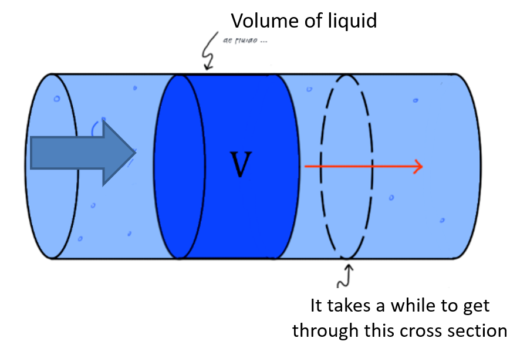
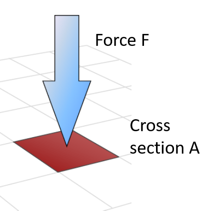
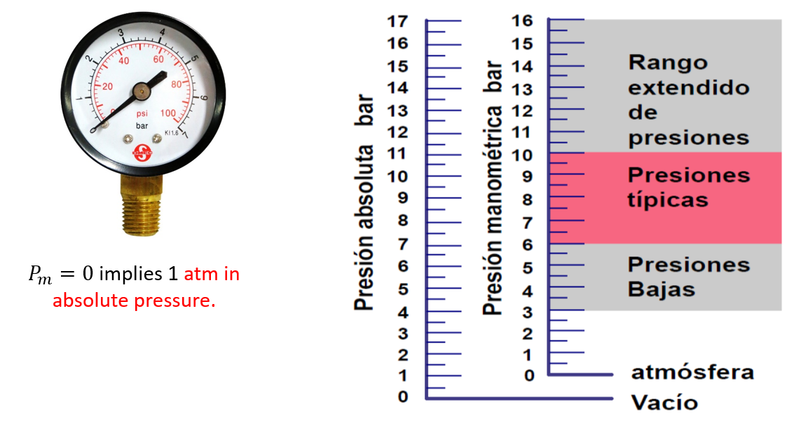

4 Elements of a pneumatic circuit
4.1 Elements of a pneumatic circuit
The word ‘Pneumatics’ is derived from the Greek ‘neuma’ (air or breath). Originally, the term pneumatics designated the science of the movement and properties of air. This is the branch of engineering that deals with the study and application of compressed air, its generation, transmission and control.
The design of devices that used air energy dates back to the 18th century (with the pneumatic rifle). “Modern” devices: pneumatic rock drill, pneumatic brakes. “Modern” pneumatics was born in the 1950s, when techniques and forms of air energy control were introduced in industrial processes.
4.1.1 Why compressed air?
It is abundant. It is available in unlimited quantities.
It is transportable. It is easily transported through pipes.
It is storable. It is easily stored in tanks where pressure is maintained.
It is transmitted relatively quickly.
It is clean. In case of stagnation, it does not produce dirt.
4.1.2 Comparison with other technologies
| Electricity | Hydraulic | Pneumatic | ||||
| Leaks | Pollution | Apart from energy loss, no disadvantages. | ||||
| Environmental influences | Explosion hazard in certain environments; relatively sensitive to temperature. | Sensitive to temperature fluctuations; Fire hazard in case of leaks. | Does not cause explosions; Insensitive to temperatures. | |||
| Energy storage | Difficult and only in small quantities using batteries | Within certain limits, using gases | Easy | |||
| Energy transport | Unlimited, but with energy loss | Up to 100 m with flow velocity of v = 2-6 m/s, signal velocity up to 1000 m/s. | Up to 1000 m with flow velocity v = 20-40 m/s, signal velocity 20-40 m/s. | |||
| Working speed | v = 0.5 m/s | v = 1.5 m/s |
Advantages of pneumatic energy over hydraulic energy
Air density is significantly smaller than that of oil (used in hydraulics). Therefore, the inertia effect is smaller. Air can be discharged into the atmosphere after a task. Pneumatic systems are more economical. Pneumatic systems are less toxic and cleaner. Pneumatic systems are lighter, easier to transport.
| Advantages | Disadvantage |
|---|---|
|
|
4.2 Basic physical characteristics of gases
Composition: Types of gases that make up the air under consideration. Example: dry air at sea level is composed mainly of Nitrogen (78%) and Oxygen (20.99%). Shape and volume: They have no defined shape or volume. They acquire the shape and volume of the tank that contains them. Cost (Flow): It is the quantity of fluid that circulates through a section of the duct per unit of time.
The relative humidity is the amount of water vapor contained in volume of air. It depends on the air temperature and pressure. When the air is saturated, it means that the relative humidity is at 100%.
Consider the behavior of air with water under defined circumstances: temperature 20°C and a relative humidity of 50%. This means that it contains 8.7g of water which is the half of the maximum 17.4g.
When the compressor compresses the 4 \(ùëö^3\). to form 1 \(ùëö^3\), the \(4×8.7=34.8 g\) of water cannot hold in it. The \(ùëö^3\) can hold at most 17.4 g of water. The other \(2×8.7=17.4g\) fall as drops.
Conclusion: When air is compressed, water \(H_2O\) liquefies from gaseous state to liquid state. The water vapor in the air is also compressed and the result is similar to squeezing a sponge. The compressed air reaches a saturation of 100% relative humidity inside the tank. The separated water can be drained via a drainage system.
The flow is defined as the quantity of fluid that circulates through a section of duct per unit of time. Generally the letter \(Q\) is used. \(Q = \frac{V}{t}=\frac{A s}{t}\) wit \(s\) as displacement, \(A\) as areaof the cross section and \(t\) as time. Considering that \(\frac{s}{t}\)displacement per time unit is velocity, one can rewrite \(Q=Av\). The standard units of the variables are as follows:
\([Q] = [ \frac{m^3}{s}]\)
\([A] = [m^2]\)
\([v] = [\frac{m}{s}]\)

Fig. 2.2 graphical description of flow $Q$
Gas pressure and gas laws: The relation between force \(F\) and pressure \(p\) is related by its contact cross section area A: \(F=pA\). The unit in Pascal \([Pa]=[\frac{N}{m^2}]\)in the international system (SI) and it is \([psi]=[\frac{lb}{in^2}]\) in english units. For many industrial aplications, one uses \(bar\). The relation between \(bar\) and \(Pa\) is \(1 bar = 10^5 Pa =100kPa\). The pressure that air exerts “naturally” on the Earth’s surface due to its weight is called atmospheric pressure (Atm): \(1 atm = 1.01325 bar = 101,325 P\). Due to the weight of the air column above: it decreases at higher altitudes and increases at lower altitudes.

Gauge pressure (relative pressure) indicated by the manometers ($bar$ or \(ps\)). It is the excess of air pressure with respect to atmospheric pressure. It is abbreviated \(p_m\) (\(p_g\) in English).
\(p_{absolute}=p_m+1.01325 bar (1 atm)\)
For simplification, one approximates \(1 atm \propto 1 bar\)
Another unit of pressure measurement is the \(torr\) or \(mmHg\). It is equivalent to the pressure exerted by a one millimeter column of mercury. However, we won´t use this units in our course.

\(Equivalences\):
The gas behaviour can be explained by several laws, explained as follows with \(V\) as volume and \(T\) as temperature:
Pascal’s law: \(p_{in} = \frac{F_{in}}{A_{in}} = \frac{F_{out}}{A_{out}}=p_{out}\), with in as input and out as output
Fluid pressure is transmitted equally in all directions. The force exerted by a piston is equal to the product of the effective area times the air pressure: Example of a Hydraulic Press:
4.2.1 Gas Law´s
They describe the relationships between pressure, volume and temperature: they describe how two of them are related when the other remains constant:
4.2.1.1 Boyle’s law
\(V_1 p_1 = V_2 p_2\) or \(Vp=constant\) and \(V \propto \frac{1}{p}\), with constant temperature \(T\)
“At constant temperature, the volume of gas is inversely proportional to its pressure”.
Boyle’s Law is valid as long as the temperature does not vary. Normally, when a gas is compressed, energy is dissipated in the form of heat, that is, its temperature increases. Processes with these characteristics are known as adiabatic. Otherwise, if the temperature does not change, it is known as an isothermal process. To be possible, the process must be slow
4.2.1.2 Charles’ law:
“At constant pressure, the volume of gas is proportional to its temperature”
\(\frac{V}{T}=constant\), with constant pressure \(p\)
4.2.1.3 Gay-Lussac’s law
“At constant volume, the absolute temperature of a gas is proportional to its absolute pressure”
\(\frac{p}{T}=constant\), with constant volume \(V\)
4.2.1.4 Relative Humidity: A Thermodynamic Perspective
It measures the amount of water vapor in the air compared to the maximum amount of water vapor it could contain before precipitation. Relative humidity (RH) varies with air temperature.
Relative humidity (RH) is a dimensionless ratio, expressed as a percentage, that quantifies the amount of water vapor present in the air relative to the maximum amount the air can hold at a given temperature before reaching saturation. Mathematically, it is defined as:
\(\text{RH} = \left( \frac{e}{e_s} \right) \times 100\)
Where:
- \(e\) is the actual vapor pressure of water in the air.
- \(e_s\) is the saturation vapor pressure at the same temperature.
4.2.1.4.1 Temperature Dependence
The saturation vapor pressure \(e_s\) increases exponentially with temperature due to the enhanced kinetic energy of water molecules. This means:
- Warm air can hold significantly more water vapor before becoming saturated.
- Cool air has a lower capacity for water vapor, so RH increases as temperature drops (assuming constant moisture content). This relationship is governed by the Clausius-Clapeyron equation, which describes how vapor pressure changes with temperature:
\(\frac{d \ln e_s}{dT} = \frac{L}{R_v T^2}\)
Where:
- \(L\) is the latent heat of vaporization,
- \(R_v\) is the specific gas constant for water vapor,
- \(T\) is the absolute temperature in Kelvin.
4.2.1.4.2 Practical Implications
- When RH reaches 100%, the air is saturated, and condensation occurs -leading to dew, fog, or precipitation.
- RH is a crucial parameter in meteorology, climate science, and HVAC engineering, influencing thermal comfort, cloud formation, and heat transfer processes
4.2.2 Pneumatic Installations
The follwoing part explains the components required to use pneumatic systems. The structure is composed of 5 main components: Power Supply, Actuators, Conductors, Control valves and Air conditioning.
| Structure | Example |
|---|---|
Structure
Power supply (pneumatic): Energy source
- This is typically an air compressor that draws in atmospheric air and compresses it to a usable pressure level (commonly 60–120 PSI, 4.1 to 8.3 bar).
- The compressed air is stored in a receiver tank, which acts as a reservoir to stabilize pressure and meet demand spikes.
- The energy in the form of pressurized air is the driving force behind all pneumatic operations
Actuators: They do the work of the system
- Actuators convert the energy of compressed air into mechanical motion.
- Common types include:
- Cylinders (linear motion)
- Rotary actuators (rotational motion)
- These components perform tasks like pushing, pulling, lifting, clamping, or rotating—depending on the application.
Conductors: They distribute the air
- These are the pipes, hoses, and tubes that transport compressed air from the power supply to the actuators and control valves.
- Materials vary (e.g., polyurethane, nylon, copper) depending on pressure, flexibility, and environmental conditions.
- Proper sizing and layout are crucial to minimize pressure drops and ensure efficient delivery.
Control valves: Control the flow/direction of air
- Valves regulate the flow rate, pressure, and direction of air.
- Types include:
- Directional control valves (e.g., 2/2, 3/2, 5/2 valves)
- Flow control valves (adjust speed of actuators)
- Pressure regulators (maintain safe operating pressure)
- These are often controlled manually, electrically, or via PLCs in automated systems.
Air conditioning: They purify the air
- Filters – remove dust and particulates
- Dryers – eliminate moisture to prevent corrosion and freezing
- Lubricators – add a fine mist of oil to reduce friction in moving parts
- These components are often grouped into FRL units (Filter-Regulator-Lubricator).
4.2.3 Types of Compressors in Pneumatic Systems
In pneumatic automation, compressors are the primary energy source, converting atmospheric air into pressurized air that powers actuators and control systems. The selection of a compressor depends on factors like required pressure, flow rate, duty cycle, and application environment. Compressors are broadly categorized into positive displacement and dynamic types, each with distinct operating principles.
4.2.3.1 Reciprocating Compressors (Positive Displacement)
- Operate using pistons driven by a crankshaft.
- Air is drawn into a cylinder and compressed by the piston’s motion.
Common in small-scale applications and intermittent use.
Can be single-stage (for low pressure) or multi-stage (for higher pressure).
Example: Used in automotive workshops and small pneumatic tools.
4.2.3.2 Rotary Screw Compressors (Positive Displacement)
- Use two intermeshing helical screws to compress air continuously.
- Efficient for continuous operation and high-volume air delivery.
- Low maintenance and quieter than reciprocating types.
Example: Ideal for industrial automation lines and manufacturing plants.
4.2.3.3 Vane Compressors (Positive Displacement)
- Feature a rotor with sliding vanes inside an eccentric housing.
- As the rotor turns, vanes slide in and out, trapping and compressing air.
- Compact and suitable for moderate pressure applications.
Example: Used in packaging machinery and small automation systems.
4.2.3.4 Centrifugal Compressors (Dynamic)
- Use a high-speed impeller to accelerate air outward.
- Air pressure increases as velocity is converted into pressure via a diffuser.
- Suitable for large-scale, high-flow applications.
Example: Found in HVAC systems and large industrial plants.
4.2.3.5 Axial Compressors (Dynamic)
- Air flows parallel to the axis through multiple rotor and stator stages.
- Extremely efficient at high flow rates and pressures.
- Typically used in aerospace and gas turbines, not common in standard pneumatics.
Summary Table: Compressor Types
4.2.4 Pneumatic actuators.
A pneumatic actuator is a device that converts compressed air energy into mechanical motion. They are widely used in automation, manufacturing, robotics, and process industries.
The most common types are linear actuators (cylinders) and rotary actuators.
The operating principle: compressed air enters a chamber, builds pressure, and moves a piston (linear) or vanes/rotors (rotary), generating force and motion.
Control is usually done via valves, sensors, and PLCs.
Pneumatic actuators are attractive because they are simple, robust, and cost-effective for many industrial tasks like clamping, lifting, pushing, or positioning.
Advantages of Pneumatic Actuators
| Advantage | Explanation |
|---|---|
| Simplicity & Reliability | Few moving parts → easy to maintain, long service life. |
| High Speed | Can achieve rapid response times; suitable for pick-and-place, packaging, etc. |
| Cost-Effective | Components (cylinders, valves, fittings) are relatively inexpensive compared to electric or hydraulic actuators. |
| Clean Operation | Air is non-contaminating, suitable for food, pharma, or cleanroom applications. |
| Safety | No risk of sparks (compared to electric actuators) → usable in explosive environments. |
| Force-to-Weight Ratio | Pneumatics can generate relatively large forces for their size. |
| Overload Tolerance | Can stall without damage (unlike many electric motors). |
| Easy Integration | Compatible with various control systems (manual, PLC, etc.). |
Risks and Limitations of Pneumatic Actuators
| Limitation / Risk | Explanation |
|---|---|
| Compressibility of Air | Air is compressible → motion control is less precise, positioning is not as accurate as with electric or hydraulic systems. |
| Energy Inefficiency | Compressing air consumes a lot of energy; leaks waste power → high operational cost if system is not well maintained. |
| Noise | Exhaust air and compressors generate noise, which may require mitigation. |
| Force Limitations | While strong for size, pneumatics cannot achieve the extremely high forces that hydraulics can. |
| Speed Variability | Speed depends on air pressure, line length, leaks, and load → consistency can be a challenge. |
| Maintenance Needs | Leaks are common; require regular inspection of seals, hoses, and fittings. |
| Limited Stroke Length | Linear cylinders are typically limited to ~2–3 meters max; longer travel requires other technologies. |
| Safety Hazards | Sudden release of compressed air can cause injury; uncontrolled movement may occur if air supply is lost. |
4.2.5 Pneumatic valves.
4.2.6 Pneumatic sequences.
Cascade method
Step by step method.